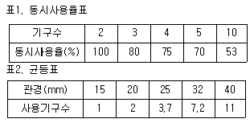

건축설비산업기사 (2006-03-05 기출문제)
1과목: 건축일반
1. 천장 내부공간이 낮아 덕트를 설치하기 어려울 경우 해결안으로 가장 부적합한 방법은?
- 철골보인 경우 관통부위를 절단한 후 주변을 스티프너로 보강한다.
- 덕트 높이를 낮추고 폭을 증가시켜 설치한다.
- 철근콘크리트 보의 충을 낮추고 폭을 증가시킨다.
- 기둥의 폭을 줄여 덕트를 기둥 측면으로 배치한다.
(정답률: 알수없음)

2. 사무소건축의 코어에 대한 설명 중 옳지 않은 것은?
- 엘리베이터는 가급적 중앙에 집중되게 한다.
- 코어 내의 각 공간은 각층마다 공통의 위치에 있게 한다.
- 엘리베이터홀은 출입구문에 바싹 접근시킨다.
- 계단과 엘리베이터 및 화장실은 가능한 한 접근시킨다.
(정답률: 알수없음)
3. 도서관의 서고계획에 관한 설명으로 옳지 않은 것은?
- 규모가 큰 도서관은 개가식을, 규모가 작은 도서관은 폐가식을 주로 채택한다.
- 서고의 수장능력 기준은 능률적인 작업용량으로서 서고 면적 1m2당 150~250권 정도이다.
- 서고의 위치는 열람실 내부나 주위, 건물 후면의 독립된 위치가 좋다.
- 서고는 도서의 증가에 따른 장래의 확장을 고려한다.
(정답률: 알수없음)
4. 철골구조의 보와 관계가 먼 부재는?
- 플랜지(flange)
- 스티프너(stiffener)
- 거셋 플레이트(gusset plate)
- 베이스 플레이트(base plate)
(정답률: 알수없음)
5. 호텔건축에 대한 설명으로 잘못된 것은?
- 사교부분은 공공성을 주체로 하며 호텔 전체의 매개공간 역할을 한다.
- 공공부분은 호텔의 가장 중요한 부분으로, 이에 의해 호텔의 형이 결정된다.
- 관리부분은 경영과 서비스의 중추적 핵이 되는 부분이다.
- 숙박부분은 시티 호텔의 경우 부지의 제한으로 대지경 계선에 따라 모양이 결정되기 쉽다.
(정답률: 알수없음)
6. 종합병원의 건축군을 크게 3부분으로 구분할 때 이에 포함되지 않는 것은?
- 외래진료부
- 응급부
- 병동부
- 부속(중앙)진료부
(정답률: 알수없음)
7. 다음 중 MC(Modular Coordination)의 특징이 아닌 것은?
- 설계작업이 단순화 된다.
- 부재의 대량생산이 가능하다.
- 현장작업이 단순해지고 공기가 단축된다.
- 보다 다양한 입면이 나타난다.
(정답률: 알수없음)
8. 상점의 판매형식 중 대면판매에 대한 설명으로 옳지 않은 것은?
- 상품에 대한 설명을 하기에 편하다.
- 판매원이 정위치를 정하기가 용이하다.
- 진열면적이 강소된다.
- 상품의 충독적 구매와 선택이 용이하다.
(정답률: 알수없음)
9. 철근콘크리트구조에서 철근의 부착력에 대한 설명으로 알맞지 않은 것은?
- 철근의 주장과는 별로 관계가 없다.
- 철근의 끝에 갈고리(hook)가 있는 것이 크다.
- 압축강도가 큰 콘크리트일수록 크다.
- 철근의 표면상태와 단면모양에 따라 좌우된다.
(정답률: 알수없음)
10. 표준형 벽돌로 2.5B 쌓기의 벽돌벽 두께는? (공간쌓기가 아닐 경우)
- 470mm
- 490mm
- 520mm
- 540mm
(정답률: 55%)
11. 다음 중 오르내리창을 잠그는데 사용되는 것은?
- 도어 스톱
- 크레센트
- 도어 체크
- 플로어 힌지
(정답률: 알수없음)
12. 목조 반자틀의 각 부재틀 상부에서 하부로 나열한 것 중 옳은 것은?
- 달대받이 - 달대 - 반자틀받이 - 반자틀
- 반자틀받이 - 반자틀 - 달대받이 - 달대
- 달대받이 - 반자틀받이 - 달대 - 반자틀
- 달대 - 달대받이 - 반자틀 - 반자틀받이
(정답률: 알수없음)
13. 계단 이용자의 미끄러짐을 방지하기 위하여 디딤판의 앞쪽에 부착하는 것은?
- 경사로(ramp)
- 계단참(stair landing)
- 논슬립(non slip)
- 챌판(riser)
(정답률: 알수없음)
14. 다음 중 사무소건축에서 사무실 크기를 결정하는 가장 중요한 요소는?
- 사업의 종류
- 내방객의 수
- 사무원수
- 골조구조
(정답률: 알수없음)
15. 철근콘크리트구조의 내력벽에서 수직 및 수평철근을 벽면에 평행하게 양면으로 배치하여야 하는 벽체의 최소 두께는?
- 200mm
- 250mm
- 300mm
- 350mm
(정답률: 알수없음)
16. 기초의 부동침하를 방지하기 위한 조치로 잘못된 것은?
- 한 건물의 기초는 가급적 동일하지 않은 기초로 한다.
- 기초 상호간은 기초보로 연결시킨다.
- 건물의 중량을 줄인다.
- 건축물 전체의 하중을 기초에 균등히 분포시킨다.
(정답률: 알수없음)
17. 다음 중 병원계획에서 병실 출입구의 폭으로 가장 적당한 것은?
- 75cm
- 90cm
- 100cm
- 120cm
(정답률: 알수없음)
18. 아파트 평면형식에 대한 설명 중 옳지 않은 것은?
- 홀형(계산실형)은 프라이버시의 침해가 적다.
- 편복도형은 각호의 통풍 및 채광이 양호하다.
- 중복도형은 프라이버시가 침해되기 쉽고 부지 이용물이 낮다.
- 집중형은 복도부분의 환기와 채광이 좋지 않다.
(정답률: 알수없음)
19. 호텔 건축에서 퍼블릭 스페이스(public space)의 중심이 되어 휴식, 면회, 담화, 독서 등 다목적으로 사용되는 공간은?
- 프런트 오피스
- 로비
- 연회장
- 테라스
(정답률: 알수없음)
20. 블록구조에서의 테두리보에 대한 설명 중 옳지 않은 것은?
- 상부로부터의 힘을 원활히 전달하기 위하여 사각형의 보만을 사용해야 한다.
- 집중하중을 직접 받는 블록을 보강하는 역할을 한다.
- 철근콘크리트바닥판으로 할 경우 테두리보를 사용하지 않아도 된다.
- 분산된 벽체를 일체로 연결하여 하중을 균등히 분포시킨다.
(정답률: 알수없음)
2과목: 위생설비
21. 유로를 폐쇄하거나 수도본관의 유량조절에 사용되는 밸브로 스톱밸브라고도 불리우는 것은?
- 슬루스밸브(sluice valve)
- 콕(cock)
- 글로브 밸브(glove valve)
- 볼밸브(ball valve)
(정답률: 알수없음)
22. 다음 중 스프링클러의 특징에 대한 설명으로 틀린 것은?
- 진행중인 화재의 진화에 가장 이상적인 설비이다.
- 소화약제가 물이므로 경제적이다.
- 감지부의 구조가 기계적이므로 오동작이 적다.
- 시설의 수명이 반영구적이다.
(정답률: 알수없음)
23. BOD를 가장 잘 나타낸 것은?
- 무기성 및 유기성 질소의 총량을 말한다.
- 오수 중에 떠있는 부유물질을 말한다.
- 생물화학적 산소요구량을 말한다.
- 화학적 산소요구량을 말한다.
(정답률: 알수없음)
24. 물을 수송하는 배관에서 직선 관로내의 마찰손실에 대한 설명으로 옳은 것은?
- 마찰손실은 관경에 비례 한다.
- 마찰손실은 배관길이에 반비례한다.
- 마찰손실은 마찰계수에 비례한다.
- 마찰손실은 유체의 속도수두에 반비례한다.
(정답률: 알수없음)
25. 다음 중 대변기의 세정방식이 아닌 것은?
- 하이탱크(high tank)식
- 로우탱크(low tank)식
- 플러시밸브(flush valve)식
- 진공탱크(vacuum tank)식
(정답률: 알수없음)
26. 트랩과 트랩의 봉수에 대한 설명 중 틀린 것은?
- 봉수의 깊이는 깊으면 깊을수록 좋다.
- 오물이 트랙에 체류하지 않도록 구조는 간단하고 내표면은 평활한 것이 좋다.
- 유수에 의해 트랩 내부를 세정할 수 있는 자기 세정 작용이 있어야 한다.
- 관트랩의 종류에는 P트랩, S트랩 및 U트랩이 있다.
(정답률: 알수없음)
27. 배관 공사후 배관의 식별 표시법의 목적과 가장 거리가 먼 것은?
- 배관계통의 취급 용이
- 배관계통의 안전도 증가
- 배관의 수명 연장
- 배관의 보수관리 용이
(정답률: 알수없음)
28. 다음 중 원칙적으로 청소구를 설치하여야 하는 장소로 옳은 것은?
- 배수 수직관의 최상류
- 배수 수평관의 최하류
- 배수관 길이 50m마다
- 배수관이 45°이상의 각도로 구부러지는 곳
(정답률: 알수없음)
29. 다음 중 배수통기관을 설치하는 목적으로 옳지 않은 것은?
- 트랩의 봉수를 보호하기 위해서
- 배수관내의 물의 흐름을 원활하게 하기 위해서
- 배수관의 워터해머(Water Hammering)를 방지하기 위하여
- 배수관내의 환기를 위하여
(정답률: 알수없음)
30. 2관식 급탕설비가 1관식 급탕설비에 비하여 좋은 점은?
- 보일러의 압력이 적어도 된다.
- 연료비가 적게 든다.
- 탕(湯)스케일등에 의한 고장이 적다.
- 급탕전을 열면 즉시 온수를 사용할 수 있다.
(정답률: 알수없음)
31. 고가수조 급수방식에 대한 설명 중 잘못된 것은?
- 대규모의 급수 수요에 대응할 수 없다.
- 일정한 수압으로 급수되므로 사용에 편리하다.
- 저수시간이 길어지면 수질이 나빠지기 쉽다.
- 단수시에도 일정량의 급수를 계속할 수 있다.
(정답률: 알수없음)
32. 펌프의 흡입양정이 3m, 토출양정이 10m, 관내 마찰손실이 0.2kg/cm2일 때 전양정은?
- 12m
- 13m
- 15m
- 20m
(정답률: 알수없음)
33. 간접배수에서 음료용 저수조 등의 간접배수관의 배수구 공간은 최소 몇 mm이상이어야 하는가?
- 50mm
- 100mm
- 150mm
- 200mm
(정답률: 알수없음)
34. 급수관의 수압시험 방법에 대한 설명 중 옳지 않은 것은?
- 배관의 일부 또는 전부를 완료하였을 때 개구부를 플러그로 막고 실시한다.
- 배관 도중에 일시적으로 설치된 공기 빼기 밸브를 사용하여 완전히 배기한 후에 서서히 가압을 하면서 행한다.
- 시험압력의 유지시간은 시험압력에 도달한 후, 배관 공사의 경우는 최소 10분으로 한다.
- 고가수조 이하 계통의 시험압력은 배관의 최저부에서 실제로 받는 압력의 2배 이상으로 한다.
(정답률: 알수없음)
35. 국소식 급탕법의 특징이 아닌 것은?
- 소규모 주택 등 급탕개소가 한정된 건물에 적합하다.
- 유지관리가 용이하고 열손실이 적다.
- 설비규모가 크고 복잡하기 때문에 초기 설비비가 비싸다.
- 급탕개소마다 가열기의 설치 스페이스가 필요하다.
(정답률: 알수없음)
36. 직결 구동방식에 의해 작동되는 펌프가 양수량 300ℓ/min, 전양정이 60m, 펌프 효율 70%, 여유율 15%를 만족시켜 줄 수 있는 소요동력은 몇 kW인가?
- 2kW
- 3kW
- 4kW
- 5kW
(정답률: 알수없음)
37. 온도상승에 의한 바이메탈의 완곡을 이용하는 감지기로서 특히 불을 많이 사용하는 보일러실과 주방에 적합한 화재감지기는?
- 가스 감지기
- 연기 감지기
- 차등식 감지기
- 정온식 감지기
(정답률: 알수없음)
38. 급탕설비에 관련되지 않는 것은?
- 스팀 사일렌서
- 팽창관
- 마노미터(manometer)
- 가열코일
(정답률: 알수없음)
39. LPG의 특성에 대한 설명 중 옳지 않는 것은?
- 상온상압하에서 기체이지만 가압이나 냉각을 하면 쉽게 액화한다.
- 발열량이 높아 단시간에 온도를 높일 수 있다.
- 공기보다 무거우므로 누설되면 대기중으로 확산되지 않고 지연에 체류한다.
- 인체에 유해한 일산화탄소가 함유되어 있어 적은 양을 흡입하더라도 중추신경마비현상을 일으킨다.
(정답률: 알수없음)
40. 어느 배관에 접속관경이 15mm인 위생기구 5개가 연결될 때 이 배관의 관경은?

- 20mm
- 25mm
- 32mm
- 40mm
(정답률: 알수없음)
3과목: 공기조화설비
41. 배연덕트의 설계시 고려할 사항으로 적합하지 않은 것은?
- 덕트내의 최대 통과풍속은 25m/sec로 한다.
- 철판 덕트의 판 두께는 고속덕트 시방에 의한다.
- 배연덕트가 방화구획을 관통시에는 방화댐퍼를 설치한다.
- 방화댐퍼의 퓨즈는 용해온도가 100℃이하인 것으로 설치 한다.
(정답률: 알수없음)
42. 냉동기에서 냉매의 압력을 응축압력에서 증발압력까지 낮추는데 사용하는 밸브는?
- 2방밸브
- 볼밸브
- 온도식 팽창밸브
- 슬루우스밸브
(정답률: 알수없음)
43. 펌프의 캐비테이션현상(공동현상)에 관한 설명 중 옳지 않은 것은?
- 물의 포화증기압력과 관계가 있다.
- 캐비테이션은 소음, 진동의 원인이 된다.
- 유효흡입양정과 관계가 있다.
- 물의 온도가 낮을수록 캐비테이션 현상이 일어나기 쉽다.
(정답률: 알수없음)
44. 배관 지지율의 구비요건 중 옳지 않은 것은?
- 관의 신축으로 움직이지 않을 것
- 배관 진동을 구조체에 전달되지 않게 할 것
- 외부의 진동이나 충격에 견딜 것
- 배관의 자중과 유체의 하중 등에 견딜 것
(정답률: 알수없음)
45. 환기방식중 배기량과 급기량의 변화에 의해 실내압을 정압 또는 부압으로 유지할 수 있는 환기방식은?
- 압입흡출병용방식
- 압입방식
- 흡출방식
- 자연환기방식
(정답률: 알수없음)
46. 대형 차고에 환기를 시킬 경우 환기의 방향이 옳은 것은?
- 상부급기와 상부배기
- 상부급기와 하부배기
- 하부급기와 상부배기
- 하부급기와 하부배기
(정답률: 알수없음)
47. 건구온도 32℃, 습구온도 27℃, 절대습도 0.02⑤kg/kg의 신선외기 3000m3/h를 냉각코일을 통과하여 건구온도 26℃, 상대습도 50%, 절대습도 0.01⑤kg/kg 상태로 할 때 제거되는 전열량은 얼마인가?
- 5,184kcal/hr
- 18,447kcal/hr
- 26,694kcal/hr
- 31,818kcal/hr
(정답률: 알수없음)
48. 진공환수식 증기난방에 사용되는 리프트 피팅(Lift fitting)은 1단으로 몇 m 정도 끌어올릴 수 있는가?
- 1m
- 1.5m
- 2m
- 2.5m
(정답률: 알수없음)
49. 배관 부속중 사용목적이 서로 다른 것과 연결된 것은?
- 플러그(Plugs) - 캡(Caps)
- 유니온(Unions) - 플랜지(Flanges)
- 부싱(Bushing) - 이경소켓(Reducing Socket)
- 티이(Tees) - 레듀서(Reducer)
(정답률: 알수없음)
50. VAV(가변풍량) 공조방식에서 송풍기제어 방식 중 동력 절감이 가장 우수한 방식은?
- 댐퍼제어
- 가변피치제어
- 회전수제어
- 흡입베인제어
(정답률: 알수없음)
51. 습공기에 관한 설명 중 옳지 않은 것은?
- 습공기를 가열하면 멘탈피가 증가한다.
- 습공기를 가열하면 상대습도는 감소한다.
- 습공기를 냉각하면 비용적은 감소한다.
- 습공기를 냉각하면 절대습도는 증가한다.
(정답률: 알수없음)
52. 클린룸의 규격을 나타내는 등급은 미 연방규격에 의하는데 class의 기준으로 옳은 것은?
- 1m3의 공기체적에 0.5㎛크기의 입자수
- 1m3의 공기체적에 1.0㎛크기의 입자수
- 1ft3의 공기체적에 0.5㎛크기의 입자수
- 1ft3의 공기체적에 1.0㎛크기의 입자수
(정답률: 알수없음)
53. 가장 먼 방열기까지의 거리가 65m이고, 증기관내의 허용 압력강하가 0.04kg/cm2일 때 100m 당의 마찰저항은? (단, 국부저항의 상당깊이는 배관길이의 100%로 한다.)
- 0.03(kg/cm2ㆍ100m)
- 0.06(kg/cm2ㆍ100m)
- 0.02(kg/cm2ㆍ100m)
- 0.04(kg/cm2ㆍ100m)
(정답률: 알수없음)
54. 열펌프 성적계수 COPh와 냉동기 성적계수 COP와의 관계를 바르게 나타낸 것은?
- COPh=1-COP
- COPh=1+COP
- COPh=COP-1
- COPh×COP=1
(정답률: 알수없음)
55. 다음 중 펌프의 특성곡선에 나타나지 않는 것은?
- 유속
- 양정
- 효율
- 축동력
(정답률: 알수없음)
56. 다음 중 가장 우선적으로 전공기 방식을 적용해야 하는 것은?
- 교실
- 아파트
- 사무소 건축의 외부존
- 식당
(정답률: 알수없음)
57. 온수난방에서 방열기의 전 방열량이 2000kcal/h이면 상당 방열면적 EDR(m2)은? (단, 표준상태임)
- 3.85m2
- 4.44m2
- 5.56m2
- 7.43m2
(정답률: 알수없음)
58. 공기조화기내의 가습이나 감습 장치에 엘리미네이터(ELIMINATOR)가 설치되어 있다. 이것의 용도로 옳게 기술된 것은?
- 분진 등의 정화
- 폐열회수장치
- 분무수가 밖으로 나가는 것의 방지
- 균등한 가습이나 감습을 위해
(정답률: 알수없음)
59. 덕트에서 공기의 누설 원인이 아닌 것은?
- 플랜지와 플랜지를 용접한 부분의 연결 불량
- 덕트와 판재 체결 리벳 불량
- 플랜지와 철판 사이의 실재료 불량
- 심부분의 실재료를 덕트 내부에서 바른 경우
(정답률: 알수없음)
60. 다음 중 냉각코일 부하를 결정하는 부하가 아닌 것은?
- 실내 취득부하
- 외기부하
- 송풍기와 덕트취득열량
- 펌프배관부하
(정답률: 알수없음)
4과목: 건축설비관계법규
61. 병원에서 인공소생기를 제외한 인명구조기구를 설치해야되는 최소한의 층수는?
- 3층
- 5층
- 7층
- 9층
(정답률: 알수없음)
62. 건축물을 건축할 경우 구조기준 및 구조계산에 따라 구조 안전을 확인하지 않아도 되는 것은?
- 연면적 1,500m2인 철근콘크리트조의 건축물
- 건축물 높이가 15m인 2층 건축물
- 층수가 3층 이상인 건축물
- 기둥과 기둥사이의 거리가 9m인 공장 건축물
(정답률: 알수없음)
63. 공중화장실의 설치기준에 관한 설명 중 틀린 것은?
- 대변기 및 소변기는 수세식으로 할 것
- 전체 면적은 35m2이상으로 할 것
- 대변기의 칸막이안에는 소지품을 두거나 옷을 걸 수 있는 설비를 할 것
- 출입구는 남자용과 여자용이 구분되도록 따로 설치할 것
(정답률: 알수없음)
64. 스프링클러 설비를 설치하여야 할 소방대상물 대상 중 판매시설 및 영업시설인 경우의 수용인원 기준은?
- 200인 이상
- 400인 이상
- 500인 이상
- 1,000인 이상
(정답률: 알수없음)
65. 주거용 건축물에 있어서 가구수별 급수관의 지름을 나타낸 것으로 옳지 않은 것은?
- 1가구-15mm이상
- 3가구-20mm이상
- 7가구-25mm이상
- 12가구-40mm이상
(정답률: 알수없음)
66. 학교 교실의 간막이벽을 설치할 경우 구조에 맞지 않는 것은?
- 10cm 두께의 철근콘크리트조
- 6cm 두께의 철골철근콘크리트조
- 19cm 두께의 벽돌조
- 10cm 두꼐의 석조
(정답률: 알수없음)
67. 건축물에 설치하는 배수용 배관설비의 설치 및 구조 기준에 적합하지 않은 것은?
- 배수트랩ㆍ통기관을 설치하는 등 위생에 지장이 없도록 할 것
- 오수에 접하는 부분은 방수재료를 사용할 것
- 우수관과 오수관은 분리하여 배관할 것
- 콘크리트구조체에 배관을 매설하거나 배관이 콘크리트 구조체를 관통할 경우에는 구조체에 덧관을 미리 매설하는 등 배관의 부식을 방지하고 그 수선 및 교체가 용이하도록 할 것
(정답률: 알수없음)
68. 다음 중 소화설비에 해당되지 않는 것은?
- 연결살수설비
- 스프링클러설비
- 옥외소화전설비
- 소화기구
(정답률: 알수없음)
69. 다음 중 대수선의 행위가 아닌 것은?
- 방화벽을 20m2를 해체하여 수선 또는 변경하는 것
- 미관지구안에서 건축물의 담장을 변경하는 것
- 목조건물의 기둥 1개와 보 3개를 해체하여 수선 또는 변경하는 것
- 내력벽의 벽면적을 20m2를 해체하여 수선 또는 변경하는 것
(정답률: 알수없음)
70. 건축물의 주계단에서 설치하는 난간을 아동의 이용에 안전하고 노약자 또는 신체장애인의 이용에 편리한 구조로 하지 않아도 되는 시설은 어느 것인가?
- 문화 및 집회시설
- 판매 및 영업시설
- 위락시설
- 공동주택 중 기숙사
(정답률: 알수없음)
71. 소방시설을 설치하여야 할 소방대상물에 관한 설명 중 틀린 것은?
- 연면적 3,500m2이상인 건축물에는 비상방송설비를 설치하여야 한다.
- 연면적 500m2이상인 숙박시설에는 자동화재탐지설비를 설치하여야 한다.
- 연면적 800m2이상인 주차용건축물에는 물분무등소화설비를 설치하여야 한다.
- 연면적 1,500m2이상인 업무시설에는 옥내소화전설비를 설치하여야 한다.
(정답률: 알수없음)
72. 비상경보설비를 설치하여야 하는 소방대상물의 기준으로 옳지 않은 것은?
- 소방대상물(지하가중 터널 제외) - 연면적 400m2 이상
- 지하층 - 바닥면적 150m2(공연장인 경우 100m2) 이상
- 40인 이상의 근로자가 작업하는 옥내작업장
- 지하가중 터널 - 길이 500m 이상
(정답률: 알수없음)
73. 다음 중 헬리포트의 설치기준으로 틀린 것은?
- 헬리포트의 길이와 너비는 각각 20m 이상으로 할 것
- 헬리포트의 주위한계선은 백색으로 할 것
- 헬리포트의 주위한계선의 너비는 38cm로 할 것
- 헬리포트의 중심으로부터 반경 12m 이내에는 이ㆍ착륙에 장애가 되는 건축물ㆍ공작물 또는 난간 등을 설치하지 아니할 것
(정답률: 알수없음)
74. 다음 소방시설 중 피난설비가 아닌 것은?
- 통로유도등
- 유도표지
- 피난유도선
- 비상조명등
(정답률: 알수없음)
75. 건축물의 에너지이용과 폐자재의 활용 대상 건축물에 관한 내용으로 옳지 않은 것은?
- 규모는 연면적 500m2이상이어야 한다.
- 용도는 공동주택이 포함된다.
- 용도는 1종 근린생활시설 전체가 포함된다.
- 용도는 교육연구 및 복지시설중 학교가 포함된다.
(정답률: 알수없음)
76. 지하층의 바닥면적 기준으로 얼마 이상인 층에는 식수공급을 위한 급수전을 1개소 이상 설치하여야 하는가?
- 200 제곱미터
- 300 제곱미터
- 400 제곱미터
- 500 제곱미터
(정답률: 알수없음)
77. 다음 중 배연설비에 대한 설명으로 옳은 것은?
- 비상용승강장의 배연구는 준불연재료로 하고 외기나 굴뚝에 연결한다.
- 배연구의 유효면적은 바닥면적의 1/100 이상이면 된다.
- 배연구는 손으로 열고 닫을 수 없도록 한다.
- 배연설비를 설치해야 하는 건축물은 층수가 6층 이상이어야 한다.
(정답률: 알수없음)
78. 분뇨를 재활용의 목적으로 1일 기준으로 몇 kg이상 처리하고자 할 때 시장, 군수, 구청장에게 신고하여야 하는가?
- 10kg 이상
- 20kg 이상
- 30kg 이상
- 50kg 이상
(정답률: 알수없음)
79. 건축물의 피난층 또는 피난층의 승강장으로부터 건축물의 바깥쪽에 이르는 통로에 경사로를 설치하여야 할 파냄 및 영업시설의 최소 연면적은?
- 2,000m2
- 3,000m2
- 5,000m2
- 6,000m2
(정답률: 알수없음)
80. 단독정화조 구조물의 윗부분이 밀폐되는 경우, 뚜껑의 크기(직경)가 바르게 설명된 것은?
- 처리대상인원이 10인 이하 - 30cm 이상
- 처리대상인원이 20인 이하 - 40cm 이상
- 처리대상인원이 30인 이하 - 50cm 이상
- 처리대상인원이 31인 이상 - 60cm 이상
(정답률: 알수없음)